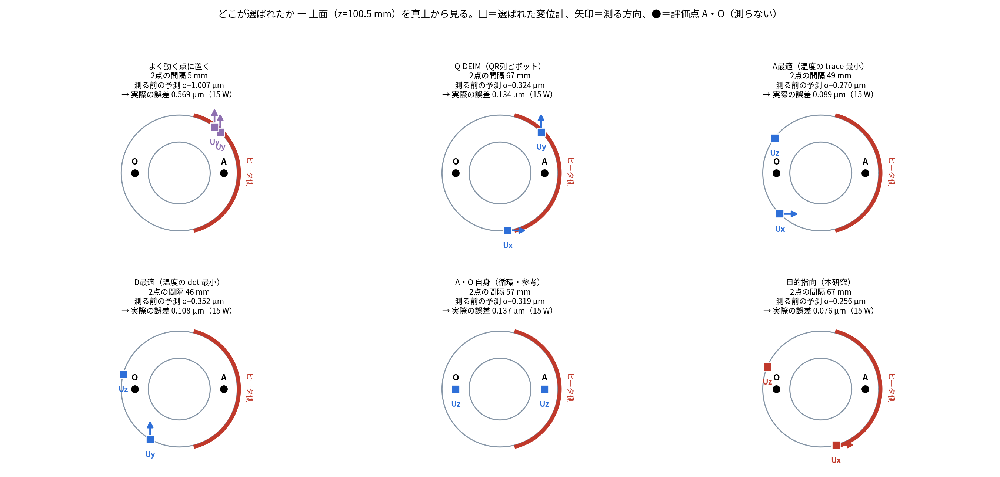

発表資料 presen_001 §12 の「センサの置き場所：Fisher 情報行列」は、式が多く、1 ページでは分かりにくい所です。この記事では、そこを順を追って、本番の計算の数字で確かめながら解説します。
この記事で分かること
数字はすべて、本研究の本番のデータ（OpenFOAM の温度、POD
の型、FrontISTR
で解いた型ごとの変位、ROM）から計算しました（run/make_blog012_fisher_figs.py、results/blog012_fisher.json）。
中空円筒の外周の片側（+x 側）にヒータがあり、温めると円筒が反ります。知りたいのは、上面の 2 点 A・O の高さの差（反り A−O）です。A・O には何も置けない（測れない）とします。
データ同化を 14,754 回まわして比べることもできますが、時間がかかります。データ同化をまわす前に、計算だけで良い場所を選べないか。そのための道具が Fisher 情報行列です。
温度分布は、POD の型の足し合わせで表せます（blog_004）。
\[ \mathbf T(t) \approx \bar{\mathbf T} + a_1(t)\,\boldsymbol\varphi_1 + a_2(t)\,\boldsymbol\varphi_2 + \cdots \]
型 1・2 で、温度の変化の 99.89 % を表せます。そこでこの記事では、説明を簡単にするため、未知数を \(a_1, a_2\) の 2 つに絞ります（本番は 5 つ。§8）。
型の大きさは、私が「一番大きく変わるセルで 1」になるようにそろえました。そうすると、重み \(a_1, a_2\) の単位が K になり、「型 1 の重みが 1 K 増える＝一番変わるセルで 1 K 上がる」と読めます。
センサの値 \(y\) は、未知数の一次式で書けます（ノイズ \(\varepsilon\) 付き）。
\[ y = \mathbf h^{\mathsf T} \mathbf a + \varepsilon, \qquad \mathbf a = \begin{pmatrix} a_1 \\ a_2 \end{pmatrix} \]
この \(\mathbf h\) を感度と呼びます。「\(a_1\) が 1 増えると、センサの値がどれだけ変わるか」です。
| センサ | 感度 \(\mathbf h\) の中身 | 本番の値 |
|---|---|---|
| 温度計 P2 | その場所の型 1・型 2 の値 | \((-0.609,\ -1.000)\) |
| 温度計 P0 | 同上 | \((-0.754,\ -0.739)\) |
| 変位計 | FrontISTR で前もって解いた「型 1・型 2 だけの温度のときの変位」[µm/K] | 場所と向きで変わる（§6） |
符号がマイナスなのは、型の向き（符号）を POD がそう決めたからで、意味はありません。\(a\) の側も同じ向きで測るので、温度は正しく出ます。
知りたい反りも、同じく一次式です。
\[ d = \mathbf w^{\mathsf T} \mathbf a, \qquad \mathbf w = (0.327,\ -1.431)\ \ \mu\mathrm m/\mathrm K \]
\(\mathbf w\) は、A の上下の変位から O の上下の変位を引いたもの（FrontISTR の結果から）です。反りは型 2（ヒータ側と反対側の差）でほぼ決まることが、\(|w_2| \gg |w_1|\) から読み取れます。
センサのノイズの大きさ（標準偏差）は、本番と同じく、温度計 0.3 K、変位計 0.3 µm とします。分散は \(r = 0.3^2 = 0.09\) です。
まず一番簡単な場合、未知数が \(a_1\) だけ、センサが温度計 P2 の 1 本だけで考えます（\(a_2\) は無視。説明のため）。
P2 の値は \(y = h\,a_1 + \varepsilon\)、\(h = -0.609\)、ノイズの分散 \(r = 0.09\) です。
\(a_1\) が \(\delta\) だけずれると、P2 の値は \(h\,\delta\) だけずれます。これがノイズ（± 0.3 K）より大きければ、そのずれは「見える」。見えやすさを測るのが Fisher 情報 \(F\) です。
\[ F = \frac{h^2}{r} = \frac{(-0.609)^2}{0.09} = 4.12\ \ [1/\mathrm K^2] \]
\(a_1\) が分かっているとき、P2 の値 \(y\) が出る確からしさ（尤度）は、ノイズが正規分布なら
\[ p(y \mid a_1) \propto \exp\!\left(-\frac{(y - h\,a_1)^2}{2r}\right) \]
です。\(a_1\) を横軸にしてこれを描くと、山の形になります。山が鋭いほど、\(a_1\) が少し違うだけで「その値は出にくい」と分かる＝情報が多い。山の鋭さは、対数をとって 2 回微分した値で測ります。
\[ F = -\frac{\partial^2 \ln p}{\partial a_1^2} = \frac{h^2}{r} \]
これが Fisher 情報の定義です（一般には期待値をとるが、この一次式では値が 1 つに決まる）。どんな推定方法でも、ばらつきは \(1/F\) より小さくできません（クラメール・ラオの下限）。
参考：Fisher情報量と共分散行列（Qiita）、フィッシャー情報量、どんなイメージ？（note）
データ同化では、測る前にも「\(a_1\) はだいたいこのくらい」という見込みがあります。本番と同じ方法で、初期温度・発熱・放熱をばらつかせた 4,000 本の ROM を 150 秒まで進め、その散らばりから決めました。
測った後の分散 \(P\) は、「情報の足し算」で求まります（分散の逆数を情報と見る）。
\[ \frac{1}{P} = \frac{1}{B} + F = \frac{1}{6.36} + 4.12 = 4.28, \qquad P = 0.234 \]
図 1 型 1 の重み \(a_1\) の不確かさ。点線が測る前（標準偏差 2.52 K）、緑が P2 の温度計だけから（0.49 K）、赤が両方を合わせた後（0.48 K）。幅を比べるため、中心を 0 にそろえて描いた。
ここまでのまとめ：情報は \(F = h^2/r\)。測る前の情報 \(1/B\) に足すと、測った後の不確かさ \(P\) が出る。
次に、未知数を \(a_1, a_2\) の 2 つ、温度計を P2・P0 の 2 本にします。式は 3 章と同じ形で、数が行列になるだけです。
センサ 1 本の情報は、感度のベクトル \(\mathbf h\) から作る 2×2 の行列 \(\mathbf h\mathbf h^{\mathsf T}/r\) です。2 本あれば足し算します。
\[ F = \frac{\mathbf h_{P2}\mathbf h_{P2}^{\mathsf T}}{r} + \frac{\mathbf h_{P0}\mathbf h_{P0}^{\mathsf T}}{r} = \frac{1}{0.09}\left[\begin{pmatrix}0.371 & 0.609\\ 0.609 & 1.000\end{pmatrix} + \begin{pmatrix}0.568 & 0.557\\ 0.557 & 0.546\end{pmatrix}\right] = \begin{pmatrix}10.43 & 12.95\\ 12.95 & 17.17\end{pmatrix} \]
（P2 の行列の 1 行目は \((-0.609)^2 = 0.371\)、\((-0.609)(-1.000) = 0.609\) のように計算します。）
測る前の不確かさ（4,000 本の散らばり、150 秒）は
\[ B = \begin{pmatrix} 6.36 & 1.93 \\ 1.93 & 1.26 \end{pmatrix} \]
で、測った後は 3 章と同じく「情報の足し算」の逆数です。
\[ P = \left(B^{-1} + F\right)^{-1} = \begin{pmatrix} 0.427 & -0.286 \\ -0.286 & 0.246 \end{pmatrix} \]
\(P\) の対角は、\(a_1\)・\(a_2\) それぞれの分散です。非対角（−0.286）は、「\(a_1\) が大きめなら \(a_2\) は小さめ」という組み合わせのばらつきを表します。2 つの未知数の不確かさは、楕円で描けます（図 2 の緑）。
楕円が斜めに細長いのは、温度計 2 本の感度 \(\mathbf h_{P2} = (-0.61, -1.00)\) と \(\mathbf h_{P0} = (-0.75, -0.74)\) が似た向きだからです。温度計は「\(\mathbf h\) の向き」の組み合わせはよく測れますが、それと直角の向き（\(a_1\) を増やして \(a_2\) を減らす向き）はあまり測れません。
反りは \(d = \mathbf w^{\mathsf T}\mathbf a\) なので、反りの分散は
\[ \sigma_d^2 = \mathbf w^{\mathsf T} P\, \mathbf w \]
です。手で計算すると、
\[ P\mathbf w = \begin{pmatrix} 0.427 \times 0.327 + (-0.286)(-1.431) \\ (-0.286)(0.327) + 0.246 \times (-1.431) \end{pmatrix} = \begin{pmatrix} 0.549 \\ -0.445 \end{pmatrix}, \qquad \mathbf w^{\mathsf T} P\mathbf w = 0.327 \times 0.549 + (-1.431)(-0.445) = 0.816 \]
| 反りの不確かさ（標準偏差） | |
|---|---|
| 測る前（\(B\)） | 1.21 µm |
| 温度計 P2・P0 で測った後（\(P\)） | 0.90 µm |
温度計 2 本だけでは、反りは ± 0.90 µm までしか絞れません。図 2 で見ると、反りが増える向き（矢印、\(\mathbf w\) の向き）が、緑の楕円の長い方向に近いからです。温度計が苦手な向きと、反りが変わる向きが重なっています。
候補の変位計（感度 \(\mathbf h_c\)、ノイズ \(r\)）を 1 本足すと、情報は \(F + \mathbf h_c\mathbf h_c^{\mathsf T}/r\) になります。逆行列を計算し直さなくても、次の式（シャーマン・モリソンの式）で更新できます。
\[ P_{\text{新}} = P - \frac{P\mathbf h_c\,\mathbf h_c^{\mathsf T}P}{\mathbf h_c^{\mathsf T}P\,\mathbf h_c + r} \]
これに \(\mathbf w\) を両側から掛けると、反りの分散がどれだけ減るかが出ます。
\[ \Delta_c = \mathbf w^{\mathsf T}P\mathbf w - \mathbf w^{\mathsf T}P_{\text{新}}\mathbf w = \frac{\big(\mathbf w^{\mathsf T} P\,\mathbf h_c\big)^2}{\mathbf h_c^{\mathsf T} P\,\mathbf h_c + r} \]
\(\Delta_c\) が一番大きい候補を選べば、反りが一番よく分かる配置になります。これを目的指向の選び方と呼びます（知りたい量＝目的を指定するから）。
本番の候補から、2 つを取り出して比べます。
| 目的指向で選んだ点 | よく動くが反りに効かない点 | |
|---|---|---|
| 場所 [mm]・向き | (36.2, −9.7, 100.5)・Ux（上面のヒータ側） | (37.2, 4.9, 80.4)・Uz（外周のヒータ側の上の方） |
| 感度 \(\mathbf h_c\) [µm/K] | \((-0.577,\ 1.324)\) | \((-0.693,\ -0.776)\) |
| \(P\mathbf h_c\) | \((-0.626,\ 0.491)\) | \((-0.074,\ 0.008)\) |
| 分母 \(\mathbf h_c^{\mathsf T}P\mathbf h_c + r\) | \(1.010 + 0.09 = 1.100\) | \(0.045 + 0.09 = 0.135\) |
| 分子 \((\mathbf w^{\mathsf T}P\mathbf h_c)^2\) | \((-0.906)^2 = 0.821\) | \((-0.035)^2 = 0.0013\) |
| 反りの分散の減り \(\Delta_c\) | 0.746 | 0.009 |
| 足した後の反りの不確かさ | \(\sqrt{0.816 - 0.746}\) = 0.26 µm | \(\sqrt{0.816 - 0.009}\) = 0.90 µm |
右の点は、感度の大きさは左とあまり変わらない（よく動く点の上位 10 % に入る）のに、反りはほとんど絞れません。理由は感度の向きです。右の点の \(\mathbf h_c = (-0.69, -0.78)\) は、温度計 P0 の \((-0.75, -0.74)\) とほぼ同じ向きで、温度計がすでに測った情報を、もう一度測っているだけです。そのため分母の \(\mathbf h_c^{\mathsf T}P\mathbf h_c\) が 0.045 と小さく、分子も小さくなります。

図 2 型 1・型 2 の重みの不確かさ（1 標準偏差の楕円）。点線が測る前、緑が温度計 P2・P0 で測った後、赤が目的指向の変位計を 1 本足した後、青が「よく動くが反りに効かない点」を足した後。灰の点線は反りが一定の線、矢印は反りが増える向き。右は左の中心を拡大したもの。
\(\Delta_c\) は、候補ごとにベクトルの掛け算をするだけなので、14,754 通りでもすぐ計算できます。

図 3 表面の各点に変位計を 1 本置いたときの、反りの分散の減り \(\Delta_c\)（3 方向のうち一番大きいもの、最大を 1 にそろえた）。黄色ほど反りに効く。A・O の近く（12 mm 以内）は候補から外したので 0（濃い紫）。
未知数を \(\boldsymbol\theta\)（本番では代表 5 点の温度）、センサ \(c\) の感度を \(\mathbf h_c\)、ノイズの分散を \(r_c\)、観測する時刻を \(k\) とすると、
\[ F = \sum_{c}\sum_{k} \frac{\mathbf h_{c,k}\,\mathbf h_{c,k}^{\mathsf T}}{r_c}, \qquad P = \left(B^{-1} + F\right)^{-1}, \qquad \sigma_d^2 = \mathbf w^{\mathsf T} P\,\mathbf w \]
本番（presen_001 §12-4）は、この記事の例と次の点が違います。
| この記事の例 | 本番 | |
|---|---|---|
| 未知数 | 型 1・2 の重み（2 つ） | 代表 5 点の温度（5 つ） |
| 測る前の不確かさ \(B\) | 150 秒の 1 時刻 | 30〜300 秒の 10 時刻 |
| 採点 | 反りの分散の減り \(\Delta_c\) | 10 時刻で平均した「残る反りの標準偏差」\(J_c\) |
| 変位計の本数 | 1 本 | 2 本（1 本ずつ選ぶ） |
3 で \(P\) を更新するのが大事です。1 本目と同じ情報を持つ候補は、2 本目の採点で分母が小さくなり、選ばれにくくなります。
同じ候補 14,754 通りから、選び方だけを変えて 2
本を選び、データ同化（EnKF）をまわして実際の反りの誤差を比べました（results/placement_method_comparison.json）。

図 4 選び方ごとに選ばれた変位計 2 本の位置（上面を真上から見た図）。
| 選び方 | 予測した反りの不確かさ [µm] | 実際の反りの誤差 15 W [µm] | 25 W | 間欠加熱 |
|---|---|---|---|---|
| 変位なし（温度 2 点のみ） | 1.19 | 0.775 | 1.417 | 0.635 |
| よく動く点に置く | 1.01 | 0.569 | 1.079 | 0.453 |
| Q-DEIM | 0.32 | 0.134 | 0.165 | 0.105 |
| D 最適 | 0.35 | 0.108 | 0.109 | 0.095 |
| A 最適 | 0.27 | 0.089 | 0.097 | 0.078 |
| 目的指向 | 0.26 | 0.076 | 0.083 | 0.072 |
「\(P\) を小さくする」と言っても、何を小さくするかで選ぶ場所が変わります。1 本足したときの得は、6-1 の式から次のように書けます。
| 基準 | 小さくするもの | 1 本足したときの得（大きいほどよい） | 意味 |
|---|---|---|---|
| A 最適 | \(\operatorname{tr}P\)（対角の和） | \(\dfrac{\mathbf h_c^{\mathsf T}P^2\mathbf h_c}{\mathbf h_c^{\mathsf T}P\mathbf h_c + r}\) | すべての未知数を平均的によく知る |
| D 最適 | \(\det P\)（楕円の面積） | \(\ln\!\Big(1 + \dfrac{\mathbf h_c^{\mathsf T}P\mathbf h_c}{r}\Big)\) | 楕円の面積（体積）を小さくする |
| E 最適 | \(F\) の最小固有値を大きく | 閉じた式にならない（候補ごとに固有値を計算） | 一番分からない向きをなくす |
| 目的指向 | \(\mathbf w^{\mathsf T}P\mathbf w\) | \(\dfrac{(\mathbf w^{\mathsf T}P\mathbf h_c)^2}{\mathbf h_c^{\mathsf T}P\mathbf h_c + r}\) | 知りたい量（反り）だけをよく知る |
| 注意 | 中身 |
|---|---|
| 知りたい量で答えが変わる | 反りに最適な点と、温度場全体・発熱量に最適な点は違う。本研究で確かめたのは反りに対する配置だけ |
| 線形・正規分布の近似 | \(P = (B^{-1}+F)^{-1}\) は、モデルが一次式でノイズが正規分布のときの式。実際の EnKF は、発熱・放熱も推定するので少し非線形で、メンバーの数も有限。選んだ後に必ずデータ同化で確かめる（§8-2 で確かめた） |
| 1 本ずつ選ぶ方法 | 全部の組み合わせの中での最適は保証しない |
| 測る前の不確かさ \(B\) の決め方 | \(B\) を変えると選ぶ場所も変わりうる。本研究は、初期温度・発熱・放熱をばらつかせた 4,000 本の ROM から決めた |
| この記事の 2 次元の例 | 説明のため、未知数を型 1・2 に絞った。本番の 5 次元とは数字が違う（§8） |
| プログラム | すること |
|---|---|
run/make_blog012_fisher_figs.py |
この記事の図 1〜3
と数字（results/blog012_fisher.json）。型 1・2
に絞った例 |
run/placement_method_comparison.py |
本番の比較（未知数 5、2 本、6 つの選び方、EnKF での確認） |
run/select_nonrep_temp_disp.py |
本番の目的指向の採点（add_row・score） |
1
本足したときの更新と採点（run/make_blog012_fisher_figs.py
から）：
def post(Bm, hs, rs): # 測った後の不確かさ P = (B⁻¹ + F)⁻¹
F = sum(np.outer(h, h) / r for h, r in zip(hs, rs))
return np.linalg.inv(np.linalg.inv(Bm) + F), F
PT, FT = post(B, hT, [SIG_T**2] * 2) # 温度計 P2・P0 で測った後
q = np.einsum("ij,jk,ik->i", H, PT, H) # 候補ごとの hᵀ P h
goal = (H @ PT @ w)**2 / (q + r) # 目的指向の得 Δ_c（反りの分散の減り）
Aopt = np.einsum("ij,jk,ik->i", H, PT @ PT, H) / (q + r) # A 最適の得
Dopt = np.log(1 + q / r) # D 最適の得